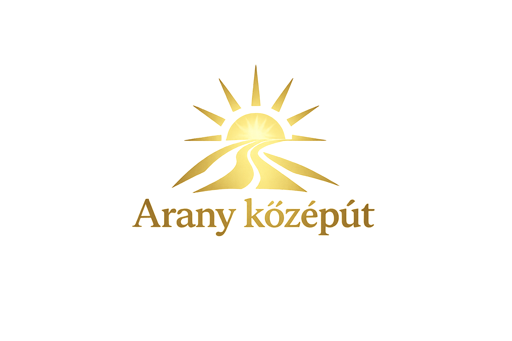

Az Arany középút egy formálódó politikai kezdeményezés, amelynek célja az, hogy világos, átlátható és
következetes válaszokat adjon a mai társadalmi és politikai kérdésekre.
Ez az oldal azért jött létre, hogy összegyűjtsük és közérthetően bemutassuk azokat az álláspontokat, amelyek mentén
az Arany középút a jövőben működni szeretne – indoklással együtt.
Az Arany középút elnevezés tudatos választás. Arra a meggyőződésre utal, hogy a mai közéletet túlságosan
gyakran határozzák meg merev ideológiai címkék: baloldali vagy jobboldali, liberális vagy konzervatív.
Mi nem ezekhez a címkékhez szeretnénk igazodni. Ehelyett minden kérdésben arra törekszünk, hogy megtaláljuk azt a megoldást,
amely a lehető leginkább morálisan védhető, logikusan átgondolt, és tényeken alapul.
Az arany középút számunkra nem „langyos kompromisszum”, hanem nyitott vizsgálat: értékes elemek felismerése, és a közjót nem
szolgáló megoldások következetes elutasítása.
Egymondatos álláspont: A korrupció nem csupán egyéni visszaélések sorozata, hanem rendszerszintű probléma, amelyet csak valódi átláthatósággal és következetes intézményi megoldásokkal lehet visszaszorítani.
A korrupció Magyarországon sokak számára elsősorban a közpénzek eltűnését jelenti, de a probléma ennél mélyebb. A legnagyobb kár nem pusztán anyagi: a folyamatos visszaélések érzete hosszú távon aláássa az emberek bizalmát az államban, az intézményekben és a politikában mint egészben.
Nem gondoljuk, hogy minden döntésnek vagy minden állami működésnek teljes részletességgel nyilvánosnak kell lennie. Ugyanakkor ez nem jelentheti azt, hogy a közpénzek felhasználása követhetetlenné válik. Olyan rendszert kell kialakítani, amelyben az állampolgárok közérthető formában követhetik, mire fordítják a közös forrásokat.
Hisszük, hogy a visszaélések kockázatát csökkenteni kell: szakmai alkalmasságon alapuló kinevezésekkel, működő ellenőrzéssel és valós számonkérhetőséggel. Számunkra az átláthatóság alapállás: a döntések érthetők, indokolhatók és számonkérhetőséggel kell legyenek.
Egymondatos álláspont: A jogállamiság lényege az, hogy a törvények mindenkire egyformán vonatkoznak, és sem a hatalom, sem az egyes intézmények nem állhatnak a jog fölött.
A jogállamiság számunkra alapfeltétel. Egy jól működő országban magától értetődőnek kellene lennie annak, hogy az állam, a politikai vezetők és az intézmények egyaránt a törvényeknek vannak alárendelve, és az alapvető jogok valódi védelem alatt állnak.
A jogállamiság nem létezhet független intézmények nélkül. A bíróságoknak, az ügyészségnek és a rendvédelmi szerveknek politikai befolyástól mentesen kell működniük. A politika szerepe korlátozott: nem irányítania, hanem garantálnia kell a törvényes működést.
Amikor egy befolyásos személy következmények nélkül marad, az azt az üzenetet közvetíti, hogy a jog nem mindenkire vonatkozik. Ez aláássa a társadalom normakövetését. Számunkra az intézmények függetlensége nem alku tárgya.
Egymondatos álláspont: A szabad és sokszínű tájékoztatás alapfeltétele egy működő demokráciának; a média nem lehet a hatalom eszköze, hanem a nyilvánosság szolgálója kell legyen.
Sokan úgy látják, hogy a nyilvánosság jelentős része nem a valóság bemutatására, hanem politikai üzenetek közvetítésére szolgál, gyakran egyoldalúan. A valódi tájékozódás sokszor csak azok számára elérhető, akik tudatosan több forrásból informálódnak.
Ha létezik állami média, annak kizárólag a társadalmat kell szolgálnia: hiteles, tényszerű tájékoztatással, kiegyensúlyozott módon. Az állami nyilvánosság nem lehet egyetlen politikai erő kommunikációs felülete, és nem szolgálhat manipulációra.
A pluralizmus természetes: nem baj, ha különböző értékrendű médiumok léteznek. A határ ott húzódik, ahol a tartalom nem meggyőződésből, hanem anyagi vagy politikai nyomás hatására születik. A legnagyobb veszély a félretájékoztatás és az ebből fakadó apátia.
Egymondatos álláspont: A demokrácia nem pusztán a szavazás aktusa, hanem egy olyan rendszer, amely csak akkor működik jól, ha az állampolgárok tájékozott döntéseket tudnak hozni, és a játékszabályok nem torzulnak a hatalom érdekében.
A választások léte önmagában nem garantálja a népakarat érvényesülését. Ha a döntéseket tartósan egyoldalú tájékoztatás vagy manipuláció befolyásolja, a szavazás inkább formális eseménnyé válik.
Az apátia és a „úgysem számít” érzés a demokráciát belülről gyengíti. Ez gyakran akkor alakul ki, amikor az emberek hosszú időn keresztül azt tapasztalják, hogy nincs valódi beleszólásuk a folyamatokba.
A demokratikus részvétel nem merülhet ki négyévente leadott szavazatban. Bizonyos kérdésekben szükség van arra, hogy az állampolgári vélemény közvetlenebb formában is megjelenhessen, miközben összetett ügyekben a felelős döntéshozatal szakmai alapokra kell épüljön. A fő kihívás ma a manipuláció és az ebből fakadó bizalmatlanság.
Egymondatos álláspont: Az infláció és a megélhetési válság akkor válik valódi társadalmi problémává, amikor az árak tartósan elszakadnak a jövedelmektől, és a tisztességes munkából élők sem tudnak biztonságosan megélni.
Az elmúlt években az infláció mindennapi tapasztalattá vált. Sok kiadás vált megfontolandóvá vagy elérhetetlenné, nem luxuscikkekről, hanem alapvető szolgáltatásokról és élelmiszerekről beszélve.
A válság nemcsak az árak emelkedéséből fakad, hanem abból is, hogy a jövedelmek nem követik ezt a változást. A társadalmi széttartás erősödik: vannak, akik viszonylag biztonságosan átvészelik, míg mások számára minden hónap számolgatás.
Hisszük, hogy a gazdaság célja nem pusztán a túlélés biztosítása. A tisztességes munkából élőknek lehetőséget kell kapniuk előre tervezni, fejlődni, és időnként a mindennapokon túlmutató dolgokra is költeni.
Egymondatos álláspont: Egy egészséges gazdaságban a munka nem pusztán a túlélést kell, hogy biztosítsa, hanem kiszámítható megélhetést, fejlődési lehetőséget és egy stabil középosztály fennmaradását.
Sok esetben a túlóra nem választás, hanem feltétele annak, hogy valaki ki tudja gazdálkodni a hónap végét. Ez hosszú távon nem fenntartható.
Az adórendszerrel kapcsolatban sokan a terhek aránytalanságát érzik problémásnak, különösen az átlagos jövedelműek és az önállóan dolgozók körében. Az adófizetés akkor válik elfogadhatóvá, ha látszik, hogy a befizetett pénz a közösség javát szolgálja.
Az adózásnak igazságosabbnak kell lennie: figyelembe kell vennie a jövedelmi különbségeket. A középosztály megerősítése kulcskérdés: nem elég „el lenni”, előre is lehessen lépni.
Egymondatos álláspont: A lakhatás nem kiváltság, hanem alapfeltétel: egy olyan társadalomban, ahol a fizetés jelentős része pusztán a tető feletti jogért megy el, a gazdasági és társadalmi egyensúly megbomlik.
Az albérletárak sok esetben olyan szintre emelkedtek, hogy egy átlagos lakás fenntartása a jövedelem aránytalanul nagy részét felemészti. Saját tulajdon megszerzése sokak számára reálisan elérhetetlenné vált, különösen családi segítség nélkül.
Az albérlet és a lakásvásárlás közötti választás sokszor nem valódi döntés: egyik sem ad stabilitást. Emiatt sokan kényszerülnek lakótársi megoldásokra, pusztán anyagi okokból.
A szülőkkel való együttélés sok esetben racionális és jelenleg a legbiztonságosabb megoldás, de hosszú távon nem egészséges, ha a felnőtté válás és az önálló életkezdés évekkel tolódik ki. A lakhatási válság kezelése hosszú távú, következetes döntéseket igényel.
Egymondatos álláspont: Az egészségügy nem lehet bizonytalansági tényező: egy működő rendszerben a betegeknek időben, emberhez méltó módon és anyagi helyzettől függetlenül kell ellátáshoz jutniuk.
A hosszú várólisták és a túlterheltség sokak számára mindennapi tapasztalat. A sürgősségi ellátásban gyakori a többórás, akár egész napos várakozás, miközben a folyamatok lassan, széttagoltan zajlanak.
Az orvos- és szakemberhiány mögött az áll, hogy az állami egészségügy sokak számára nem kínál vonzó életpályát. A felelősséghez és terheléshez képest a megbecsülés gyakran nem arányos.
Elfogadhatatlannak tartjuk, hogy a gyors és megfelelő ellátás sok esetben pénz kérdése legyen. Az egészség nem privilégium. Ugyanakkor az egészségügyi dolgozók megbecsülése nem lehet egyoldalú: a páciensek kiszolgáltatott helyzetben vannak, és joggal várják el az emberi bánásmódot. Ennek a képzésben és intézményi kultúrában is meg kell jelennie.
Az egészségügy átalakítása politikai prioritás kell legyen: a közpénzek felhasználását úgy kell szervezni, hogy az emberek egészségét, biztonságát és méltóságát helyezze előtérbe.
Egymondatos álláspont: Az oktatás célja nem a bemagoltatás, hanem az, hogy a fiatalok megtalálják, miben jók, miben érzik magukat otthonosan, és hogyan tudnak értelmes, önálló életet építeni.
Az oktatás problémája nem elsősorban az épületek állapota, hanem a tanárhiány, a túlterheltség és az elavult szemlélet. Miközben az információhoz való hozzáférés alapvetően megváltozott, a rendszer működése alig alakult.
Újra kell gondolni: miért járnak a gyerekek iskolába. A rendszer túl gyakran kényszeríti őket olyan tananyag elsajátítására, amely sem nem érdekli őket, sem nem segíti a későbbi boldogulást. Több differenciálásra van szükség: nem minden diáknak ugyanarra az útra.
Az általános műveltség alapjai fontosak, de a cél nem az egységes terhelés, hanem az értelmes, használható tudás. Ma túl sok minden a bemagolásról szól, miközben kevéssé tanít meg gondolkodni, tanulni, problémát megoldani.
A felsőoktatás fontos lehetőség, de nem lehet az egyetlen elfogadott út. Többféle, egyformán megbecsült életútnak kell elérhetőnek lennie – úgy, hogy a fiatalok valódi eséllyel találják meg a helyüket itthon.